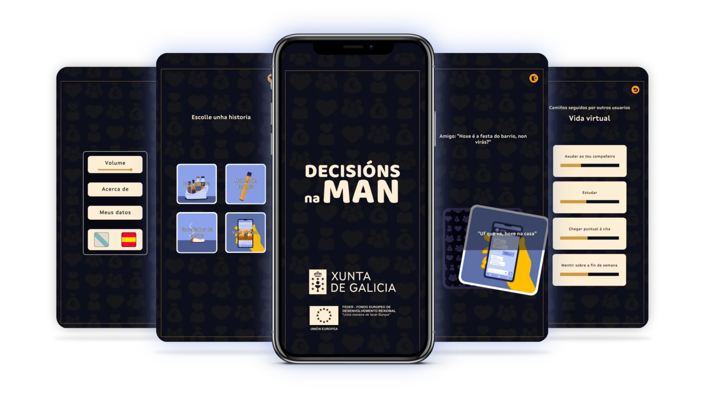

“Decisiones en mano” es un juego interactivo en línea del la Consellería de Sanidade de la Xunta de Galicia, disponible en las stores de Apple y Google Store y dirigido a un público adolescente de 12 a 14 años.
En él, se presentan decisiones ante las personas usuarias continuamente a lo largo de 4 historias que representan situaciones relacionadas con el uso de las redes sociales y el consumo de sustancias adictivas. En cada situación tendrán que decidir entre dos opciones para avanzar en el argumento de la historia, y sus respuestas afectarán a una serie de valores que afectan a su estilo de vida general. Esta novedosa herramienta permite a los equipos de prevención trabajar con el alumnado de esas edades de una manera cercana en las dinámicas aplicadas en los centros. Su objetivo es hacerles reflexionar sobre cómo afectan las decisiones que toman en su día a día a su estilo de vida.

La aplicación cuenta con las siguientes funcionalidades:
Configuración de perfil de usuario. Antes de empezar, se puede escoger el pronombre y la edad de la persona que va a jugar.
Menú de selección de partida. Con las opciones de comenzar de nuevo, continuar en un punto anterior o ver las decisiones que tomaron otras personas.
Hasta cuatro historias para jugar. El juego permite utilizar diferentes técnicas de cocina para aprender varias formas de preparar los alimentos, algunas pueden ser más saludables que otras. Las más saludables sumarán una mayor puntuación y permitirán desbloquear recetas saludables para hacer en casa.
Puntuación obtenida: Cada una se centra en un tema diferente con el que se pueden encontrar las personas durante su adolescencia.
Respuestas de otras personas usuarias. Al finalizar cada historia hay la opción de acceder a una pantalla en la que se muestra la comparación de respuestas ofrecidas por otras personas en la misma historia.